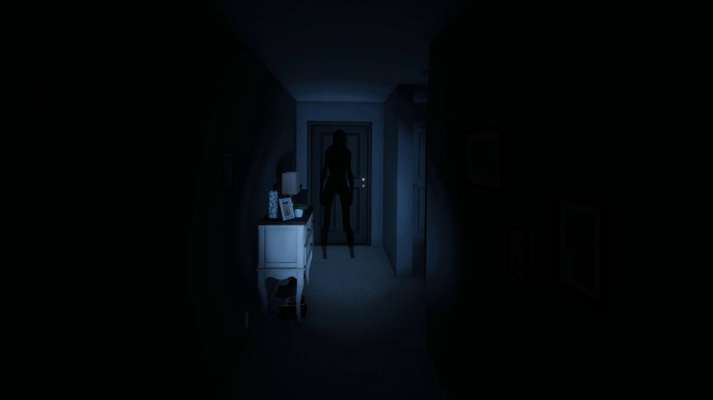
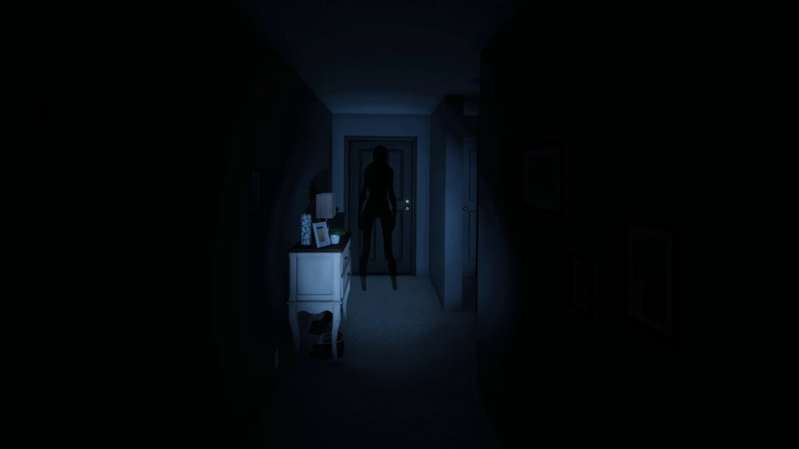

Primary Evidence: EMF 5; Spirit Box; Ghost Writing.
Secondary Evidence: When Smudged, a Spirit cannot hunt for twice as long as other ghosts.
Primary Evidence: EMF 5; Spirit Box; DOTS Projector.
Secondary Evidence: Wraiths have the ability to teleport to the player and cannot step in salt when they walk over it.
Primary Evidence: Spirit Box; Ultraviolet; DOTS Projector.
Secondary Evidence: During Hunts, Phantoms will be invisible for longer and cannot appear in pictures.
Primary Evidence: Spirit Box; Ultraviolet; Ghost Writing.
Secondary Evidence: Poltergeists will throw items in the environment more often and farther than other ghosts.
Primary Evidence: Ghost Orbs; Ultraviolet; DOTS projector.
Secondary Evidence: At the beginning of a round, a Banshee will pick a random player and can only kill that player during hunts. Once the selected player dies, the Banshee selects a new player.
Primary Evidence: EMF 5; Freezing Temperatures; Ultraviolet.
Secondary Evidence: Jinns cannot turn the fuse box off, and if the fuse box is on, a Jinn will speed up faster during hunts.
Primary Evidence: Ghost Orbs; Spirit Box; Ghost Writing.
Secondary Evidence: A Mare will never turn on a light as it is more aggressive in the dark.
Primary Evidence: Ghost Orbs; Freezing Temperatures;
Ghost Writing. Secondary Evidence: During hunts, until a Revenant sees the player, Revenants move very slow. After seeing the player, Revenants will become very fast.
Primary Evidence: EMF 5; Freezing Temperatures;
Ghost Writing. Secondary Evidence: Shades are very shy and will not interact with the environment as much.
Primary Evidence: Freezing temperatures; Ultraviolet; Ghost Writing.
Secondary Evidence: Demons are very aggressive and can hunt really early.
Primary Evidence: Ghost orbs; Freezing temperatures; DOTS projector.
Secondary Evidence:Yurei is one of the hardest ghosts to figure out because it doesn't have any secondary evidence. It has one ability to drain sanity while closing a door.
Primary Evidence: EMF 5; Freezing temperatures; DOTS projector.
Secondary Evidence: Onis will be more active with more people around, and during hunts, they will be visible more.
Primary Evidence: Ghost orbs; Spirit Box; DOTS Projector.
Secondary Evidence: Yokais are "deaf" in a sense. They cannot hear electrical equipment or players unless they are very close.
Primary Evidence: Ghost orbs; Freezing temperatures; Ultraviolet.
Secondary Evidence: While hunting, a Hantu will be faster the colder the room is.
Primary Evidence: EMF 5; Ultraviolet; DOTS projector.
Secondary Evidence: Goryos cannot switch the room they are in, and their DOTS can only be seen through a video camera.
Primary Evidence: EMF 5; Ultraviolet; Ghost Writing.
Secondary Evidence: During hunts, a Myling's footsteps will be quiet and is very hard to hear.
Primary Evidence: Ghost Orbs; Spirit Box; Freezing temperatures.
Secondary Evidence: An Onryo is more aggressive with candles in the room.
Primary Evidence: EMF 5; Spirit Box; Freezing temperatures.
Secondary Evidence: The Twins can interact with two things at the same time.
Primary Evidence: EMF 5; Ghost Orbs; DOTS projector.
Secondary Evidence: A Raiju is more aggressive and faster during hunts the more electronics are near it.
Primary Evidence: EMF 5; Ghost Orbs; Ultraviolet.
Secondary Evidence: Obakes have a chance to not leave UV traces on things they touch and during hunts they have a chance to shapeshift.
Primary Evidence: Spirit Box; Freezing temperatures; Ultraviolet; Ghost Orbs.
Secondary Evidence: As the name suggests, The Mimic can mimic the behavior of any one of the 23 other ghosts. The Mimic also is the only ghost that will give you 4 evidence.
Primary Evidence: Spirit Box; Freezing temperatures; Ghost writing.
Secondary Evidence: When getting a response on the Spirit Box, a Moroi will curse you and drain your sanity faster. A Moroi is also faster the lower sanity the player is.
Primary Evidence: Spirit Box; Ghost Writing; DOTS projector.
Secondary Evidence: You cannot hide from a Deogen. They know where you are and they will move very fast towards you until they reach you when they will become very slow.
Primary Evidence: Ghost Orbs; Ghost Writing; DOTS projector.
Secondary Evidence: Thayes will age over time. At the beginning of the round, they will be very active and fast. The longer the round goes on, the less active and slower they will become.